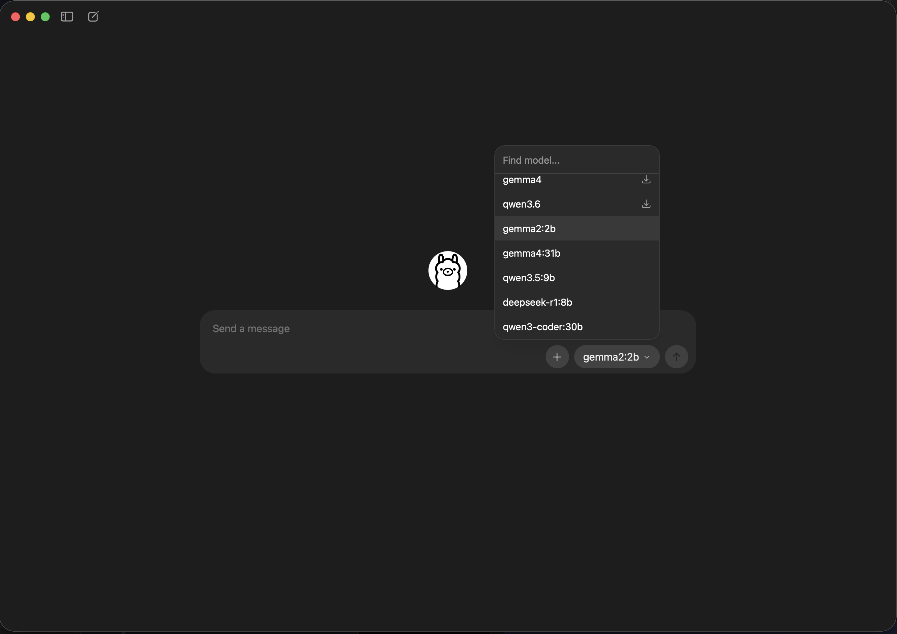
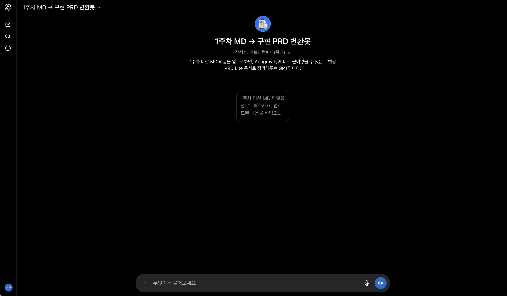
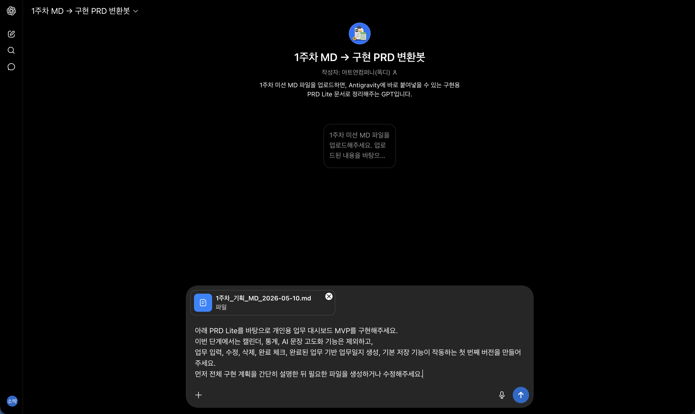
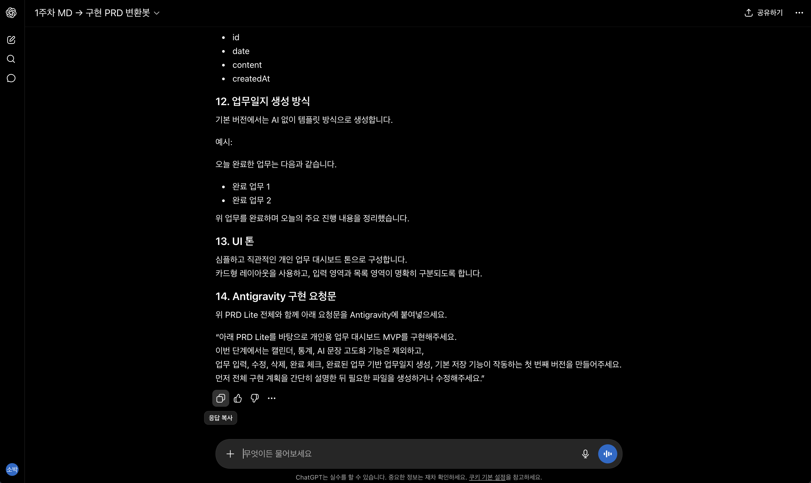
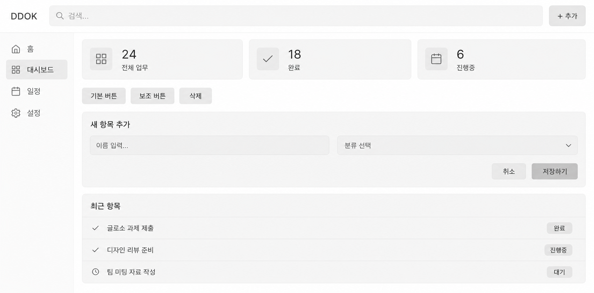
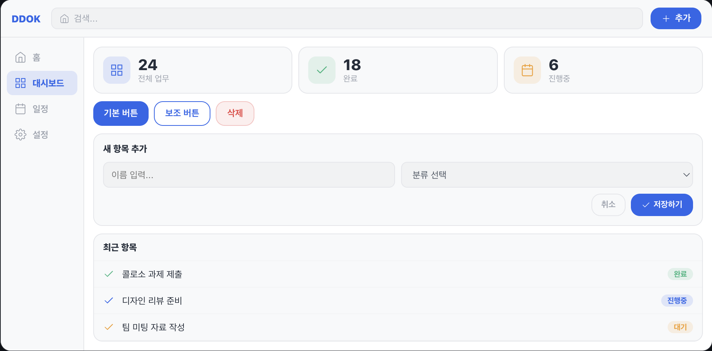
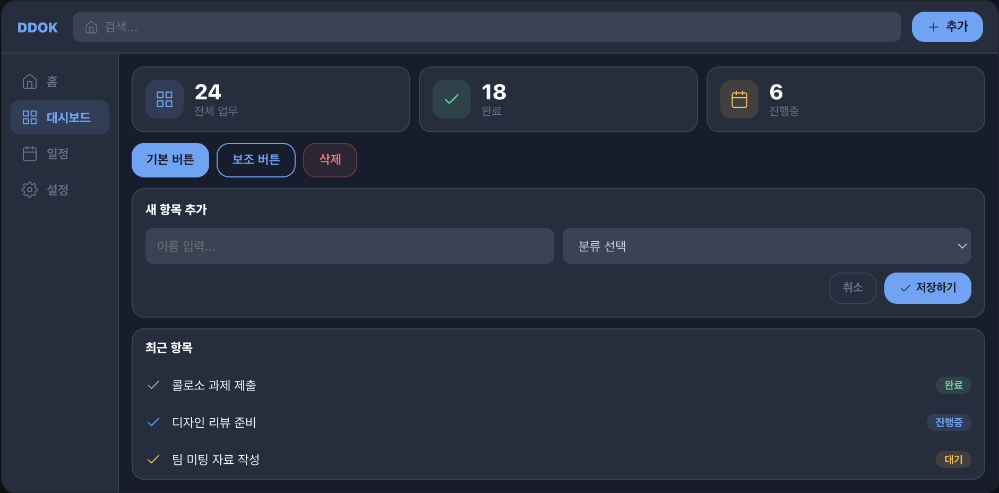

Ollama 실행 후 사용할 모델로 gemma2:2b를 선택합니다. 채팅창에 아무 글자나 입력하여 전송하면 해당 모델의
다운로드가 백그라운드에서 자동으로 수행됩니다.

채팅 입력 시 해당 모델이 없다면 자동으로 내려받기를 시작합니다.
설치 확인 예시
ollama --version
ollama list
시작 전
슬랙 질문 양식
질문은 아래 양식에 맞춰 작성해야 피드백을 받을 수 있습니다. 왼쪽에서 항목을 채우면 오른쪽 패널에 슬랙용 문장이 실시간으로 생성됩니다.
왜 양식으로 질문해야 하나요?
양식을 채우는 과정 자체가 문제를 스스로 정리하는 연습입니다. "안 돼요"보다 "이걸 하려 했는데, 이렇게 시도했고, 이런 결과가 나왔어요"로 정리하면 피드백이
훨씬 빠르고 정확해집니다.
실시간 슬랙 질문 생성기
【질문 유형】
【현재 단계】
【하고 싶었던 것】
【현재 발생한 문제】
【원하는 답변】
응대 범위
가능 — UX 흐름 판단 / 프롬프트 수정 방향 / 기능 범위 조정 / 막힌 구간 다음 단계 안내
불가 — PC·브라우저·계정 환경 직접 해결 / 코칭 주제 외 별도 앱 제작 / 한 이슈 3회 왕복 초과
1주차 — UX 설계
STEP 1. 업무 기록 돌아보기
앱을 만들기 전에 지금 업무를 어떻게 기록하고 있는지 관찰합니다. 아래 입력칸에 적은 내용은 우측 워크북과 1주차 미션 제출 MD에 자동 반영됩니다.
이번 단계 결과물 현재 기록 방식, 자주 놓치는 순간, 반복되는 불편을 정리합니다. 이
내용이 다음 단계의 문제정의 근거가 됩니다.
왜 중요한가요?
좋은 문제정의는 상상이 아니라 실제 경험과 관찰에서 시작됩니다.
현재 어떤 방식으로 기록하고, 언제 기록이 끊기며, 어떤 불편이 반복되는지 확인해야 이후 문제정의가 구체적이 됩니다.
이 단계에서 적은 내용은 STEP 2 문제정의의 직접적인 근거가 됩니다.
본인의 경험을 관찰하는 것만으로도 충분한 시작이 됩니다.
불편이 반복되는 패턴을 찾으면 문제정의가 훨씬 구체적이 됩니다.
문제정의를 위한 1차 리서치입니다
이번 단계는 거창한 리서치가 아니라, 문제정의의 근거를 모으는 단계입니다. 가장 쉬운 방법은 본인의 실제 경험을 관찰하는 것입니다. 여유가 있다면 주변 사람 1명에게 짧게
물어보거나, 온라인 후기·VOC를 1개만 찾아도 문제정의가 더 탄탄해집니다.
필수본인 경험 정리선택주변 인터뷰 1개선택온라인 VOC 1개
내 문제정의 근거는 어디에서 나왔나요?
처음에는 내 실제 경험만 선택해도 충분합니다. 인터뷰나 VOC는 더 탄탄한 문제정의를 원할 때 추가해보세요. 체크하지 않고 넘어가도 됩니다.
어떻게 적으면 좋을까요?
멋진 문장보다 실제 장면을 적습니다.
"언제", "어디서", "무엇이 불편했는지"가 보이면 좋습니다.
완벽하게 정리하지 않아도 됩니다. 나중에 문제정의에서 다시 다듬습니다.
예시
"업무는 노션에 적지만 급한 요청은 카톡, 메일, 머릿속에 흩어져 있어 하루가 끝나면 뭘 처리했는지 다시 찾게 된다."
1
현재 기록 방식 적기
메모앱, 노션, 종이, 카카오톡 나에게 보내기, 머릿속 기억 등 지금 실제로 쓰는 방식을 적어주세요.
2
자주 놓치는 순간 적기
언제 기록이 끊기거나 기억이 흐려지는지 구체적인 상황을 적어주세요.
3
반복되는 불편 정리
이 앱이 해결해야 할 공통 불편을 한두 문장으로 적어주세요.
1주차 — UX 설계
STEP 2. 문제정의
사용자가 어떤 상황에서 무엇을 하려다 막히는지, 그 결과 어떤 손실이 반복되는지를 한 문장으로 좁힙니다. 각 칸을 채우면 문제정의 문장이 자동 생성되어 우측
워크북과 1주차 미션 제출 MD에 반영됩니다.
이번 단계 결과물 사용자, 상황, 목표, 장애물, 반복되는 손실을 한 문장으로
정리합니다. 이 문장은 이후 PRD Lite와 Antigravity 구현 요청의 핵심 기준이 됩니다.
왜 문제정의가 중요한가요?
문제정의가 약하면 AI는 기능은 만들 수 있지만, 사용자가 왜 써야 하는 앱인지는 놓칠 수 있습니다.
문제정의는 PRD Lite와 Antigravity 구현 요청의 핵심 기준이 됩니다.
문제정의가 약하면 필요 없는 기능이 추가될 수 있습니다.
화면 구조가 사용자 행동과 어긋날 수 있습니다.
좋은 문제정의는 누가, 어떤 상황에서, 무엇을 하려는데, 무엇 때문에 막히고, 어떤 손실이 반복되는지를 명확히 합니다.
[사용자]는 [상황]에서 [목표]를
달성하려 하지만,
[장애물/원인] 때문에 [반복되는 비효율/손실]을 겪는다.
작성 가이드
사용자 — STEP 1에서 정리한 실제 사용자 유형을 씁니다. (예: 프리랜서 디자이너)
상황 — 문제가 발생하는 구체적 맥락을 씁니다. (예: 하루가 끝날 때)
목표 — 사용자가 하려는 행동이나 이루고 싶은 것을 씁니다. (예: 업무일지를 빠르게 완성하려 한다)
장애물/원인 — 목표 달성을 방해하는 핵심 이유를 씁니다. (예: 업무 기록이 흩어져 있어)
반복되는 비효율/손실 — 시간·감정·결과물 측면의 반복 피해를 씁니다. (예: 기록 복원에 20~30분을 추가 소비한다)
각 항목을 입력하면 문제정의 문장이 여기에 생성됩니다.
예시
프리랜서 디자이너는 하루가 끝날 때업무일지를 빠르게 완성하려 하지만, 업무 완료 순간의 기록이 흩어져 있어기록 복원에 20~30분을 추가로 소비하고, 빠진 업무가 생겨
정확성이 떨어진다.
1주차 — UX 설계
STEP 3. 사용자 흐름 설계
기능 목록이 아니라 사용자가 앱을 쓰는 행동 순서를 정리합니다. 흐름은 3개일 수도, 10개일 수도 있습니다. 필요한 만큼 추가하거나 삭제하세요.
이번 단계 결과물 사용자가 앱을 여는 순간부터 업무일지를 생성하는 순간까지의 행동
순서를 번호로 정리합니다. 이 흐름이 이후 Antigravity가 화면과 기능을 만드는 기준이 됩니다.
왜 중요한가요?
기능 목록만 있으면 앱은 복잡해지기 쉽습니다.
사용자 흐름이 명확해야 화면과 기능이 자연스럽게 연결됩니다.
사용자가 어떤 순서로 들어오는지 알 수 있습니다.
무엇을 입력하고 어떤 결과를 확인하는지 정리할 수 있습니다.
Antigravity가 필요한 화면과 기능을 더 잘 이해할 수 있습니다.
따라하기 순서
먼저 기본 예시 4개를 읽습니다.
내 앱에 필요 없는 순서는 삭제합니다.
중간에 필요한 행동이 있으면 + 순서 추가를 누릅니다.
왼쪽 칸에는 사용자의 행동, 아래 칸에는 화면이 보여줘야 할 내용을 적습니다.
좋은 작성 예시 사용자 행동: 오늘 할 업무를 입력한다 화면 표시 내용: 업무명 입력창, 카테고리 선택, 추가 버튼을
보여준다.
작성 기준
사용자가 실제로 하는 행동 순서대로 씁니다.
기능명보다 "사용자가 무엇을 한다"로 적습니다.
너무 자세한 예외 상황은 나중으로 미뤄도 됩니다.
좋은 예시
1. 앱을 연다 → 2. 오늘 할 업무를 입력한다 → 3. 완료한 업무를 체크한다 → 4. 완료 업무를 확인한다 → 5. 업무일지를 생성한다
앱 사용 흐름
필요한 만큼 순서를 추가하고 정리하세요
입력한 흐름은 우측 워크북의 "사용자 흐름"과 1주차 미션 MD에 자동 반영됩니다.
1주차 — UX 설계
STEP 4. 기능 우선순위
좋은 앱은 기능이 많은 앱이 아니라, 꼭 필요한 기능이 명확한 앱입니다. 우선순위를 나눠 구현 범위를 줄입니다.
이번 단계 결과물 첫 번째 MVP에 반드시 들어갈 기능, 나중에 추가할 기능, 이번
버전에서 제외할 기능을 구분합니다. 이 기준이 2주 안에 완성 가능한 구현 범위를 정하는 기준이 됩니다.
왜 중요한가요?
2주 MVP에서는 무엇을 만들지보다 무엇을 아직 만들지 않을지가 중요합니다.
기능을 줄여야 핵심 경험이 선명해지고 안정적으로 구현할 수 있습니다.
처음부터 너무 많은 기능을 넣으면 핵심 기능이 깨질 수 있습니다.
캘린더, 통계, AI, 로그인, 팀 공유 등은 Later로 분류해 둡니다.
줄인 기능이 Antigravity가 집중할 구현 범위를 만들어 줍니다.
기능 우선순위는 아이디어를 줄이는 과정입니다.
이번 단계에서는 ‘무엇을 만들지’뿐 아니라 ‘무엇을 아직 만들지 않을지’도 함께 정합니다.
라이트 코칭의 기본 목표는 대시보드 MVP이므로 캘린더, 통계, AI 등은 선택 확장(Later)으로 분류해 둡니다.
Must
필수 기능
첫 번째 MVP에 반드시 들어가야 하는 기능입니다.
판단 체크리스트
필수 기능 예시
업무 입력완료 체크완료 업무 확인업무일지 생성기본 저장 기능
Later
나중에 추가할 기능
있으면 좋지만, 첫 번째 버전에서는 없어도 되는 확장형 기능입니다.
판단 체크리스트
나중 추가 예시
캘린더 보기주간/월간 통계AI 문장 고도화디자인 테마 변경
Out
이번 버전에서 제외할 기능
이번 라이트 코칭 2주 커리큘럼에서는 만들지 않을 기능입니다.
판단 체크리스트
제외 예시
로그인팀 공유결제알림모바일 앱
각 항목은 우측 워크북과 1주차 미션 MD에 자동 반영됩니다.
1주차 — UX 설계
STEP 5. 화면 구조 설계
PC 대시보드 1장을 기준으로 화면의 영역을 블록으로 배치합니다. 블록을 추가·삭제하고, 자유롭게 드래그하거나 크기를 조절하면 화면 구조가 자동으로
텍스트화됩니다.
이번 단계 결과물 화면을 예쁘게 그리는 단계가 아니라, 어떤 영역이 어디에 있고 각
영역이 무슨 역할을 하는지를 구현 가능한 문장으로 바꾸는 단계입니다.
왜 중요한가요?
AI 개발 도구는 예쁜 화면보다 영역의 위치와 역할을 더 잘 이해합니다.
화면 구조를 먼저 정리하면 Antigravity에게 구현 기준을 명확하게 전달할 수 있습니다.
어떤 영역이 어디에 있어야 하는지 전달할 수 있습니다.
각 영역이 어떤 역할을 해야 하는지 명확해집니다.
이 단계는 디자인 완성도가 아니라 구현 가능한 화면 기준을 만드는 과정입니다.
왕초보용 안내: 여기서는 ‘디자인’을 하는 게 아니라 ‘영역의 위치와 역할’을 정합니다.
좌측 메뉴처럼 세로로 긴 영역은 블록을 길게 늘려서 표현합니다.
업무 입력 영역처럼 위쪽에 짧게 있어야 하는 영역은 작고 넓게 둡니다.
오늘 업무 목록처럼 핵심이 되는 영역은 화면 중앙에 크게 둡니다.
완료 업무나 업무일지는 오른쪽 또는 아래쪽에 배치해 "보조 정보"처럼 보이게 할 수 있습니다.
정답 배치는 없습니다. 중요한 것은 Antigravity가 "어떤 영역이 어디쯤 있어야 하는지" 이해할 수 있게 만드는 것입니다.
사용 방법
기본으로 들어있는 블록을 보고 대시보드 구조를 이해합니다.
필요한 영역은 + 블록 추가로 추가합니다.
블록 상단을 잡고 드래그하면 위치를 옮길 수 있습니다.
오른쪽 아래 ↘ 표시를 잡아당기면 크기를 조절할 수 있습니다.
블록 제목에는 영역명, 설명에는 그 영역의 역할을 적습니다.
예시 좌측 메뉴 영역: 오늘 업무, 완료 업무, 업무일지 화면으로 이동하는 앱 내부 메뉴 오늘 업무 목록: 진행
중인 업무 리스트와 완료 체크 버튼을 보여주는 영역
블록 설계 방법
대시보드 1장 안에 필요한 영역을 블록으로 배치합니다.
좌측 메뉴처럼 세로로 긴 영역도 블록 크기를 조절해 표현할 수 있습니다.
블록 제목은 영역명, 설명은 그 영역의 역할입니다.
위치와 크기 정보가 텍스트로 변환되어 우측 워크북과 1주차 MD에 자동 반영됩니다.
기본 대시보드 영역 예시
좌측 메뉴 영역
업무 입력 영역
오늘 업무 목록
완료 현황 / 완료 업무
업무일지 생성 영역
WorkLog — PC 대시보드 1장
DASHBOARD CANVAS · 드래그 / 리사이즈 가능
⋮⋮ 이동 핸들을 잡고 드래그하면 20px 그리드에 맞춰 이동합니다. 오른쪽 아래 ↘를 잡아 크기를 조절하세요.
입력한 블록명과 역할은 자동으로 화면 구조 문장으로 변환됩니다.
텍스트 변환 결과우측 패널 · 1주차
미션 제출에 자동 반영됩니다
(블록을 배치하면 자동으로 변환됩니다)
1주차 제출
1주차 미션 제출 / MD 다운로드
지금까지 작성한 문제정의, 사용자 흐름, 기능 우선순위, 화면 구조를 하나의 MD 파일로 다운로드합니다. 이 파일은 2주차 STEP 6에서 GPTs를 통해
구현용 PRD Lite로 변환합니다.
다운로드 전 확인 지금까지 작성한 1주차 MD를 아래 편집창에서 최종 확인하고
필요하다면 직접 수정할 수 있습니다. 수정된 내용이 있는 경우 수정한 버전으로 파일이 저장됩니다.
이 파일은 ‘PRD 완성본’이 아니라 ‘1주차 기획 MD’입니다.
2주차 첫 단계에서 GPTs에 업로드하면 Antigravity에 전달하기 좋은 구현용 PRD Lite로 정리됩니다.
1주차 기획 MD 최종 편집 및 미리보기
2주차 — 구현 준비
STEP 6. 1주차 MD를 구현용 PRD로 변환하기
1주차에서 다운로드한 MD 파일을 GPTs에 업로드해 Antigravity가 이해하기 쉬운 구현용 PRD Lite로 정리합니다.
구현용 PRD Lite 변환 가이드
1
1주차 MD → 구현 PRD 변환봇 접속
아래의 전용 링크 카드 버튼을 눌러 변환에 사용할 GPTs 화면을 새 창으로 엽니다.

GPTs 변환봇의 첫 로딩 안내 화면입니다.
🤖
1주차 MD → 구현 PRD 변환봇 열기
링크를 클릭하여 GPTs 변환봇을 새 탭에서 실행합니다.
↗
2
1주차 미션 MD 파일 업로드 및 요청 전송
내려받은 MD 파일을 업로드하고, 아래에 준비된 요청 프롬프트 문구를 복사하여 함께 채팅창에 붙여넣은 뒤 전송합니다.

내려받은 MD 파일을 인식시켰다면, 아래 프롬프트와 함께 전송 버튼을 누릅니다.
GPTs 변환 시 함께 작성할 요청 문구
아래 PRD Lite를 바탕으로 개인용 업무 대시보드 MVP를 구현해주세요.
이번 단계에서는 캘린더, 통계, AI 문장 고도화 기능은 제외하고,
업무 입력, 수정, 삭제, 완료 체크, 완료된 업무 기반 업무일지 생성, 기본 저장 기능이 작동하는 첫 번째 버전을 만들어주세요.
먼저 전체 구현 계획을 간단히 설명한 뒤 필요한 파일을 생성하거나 수정해주세요.
3
생성된 "구현용 PRD Lite" 내용 복사
봇이 정리해준 답변 내용(PRD Lite)을 전체 드래그하여 복사해둡니다. 만약 필수(Must) 기능에 캘린더/AI 등이 들어가
있다면 제외해달라고 추가 대화한 뒤 복사합니다.

최종 정리된 PRD 텍스트를 복사하여 다음 단계의 Antigravity 프롬프트로 활용합니다.
2주차 — MVP 구현
STEP 7. 업무 입력/완료 체크 기능 만들기
대시보드 MVP의 가장 기본 기능을 만듭니다. 입력, 수정, 삭제, 완료 체크가 먼저 작동해야 합니다.
완료 기준을 먼저 확인하세요
업무를 입력하면 목록에 바로 추가되어야 합니다.
각 업무는 수정/삭제할 수 있어야 합니다.
체크하면 완료 업무로 구분되어야 합니다.
새로고침해도 업무가 사라지지 않아야 합니다.
화면이 예쁘지 않아도 괜찮습니다. 이 단계에서는 "작동"이 먼저입니다.
구현 시작 가이드
1
Antigravity 실행 및 폴더 열기
사전 준비한 작업 폴더를 Antigravity에 드래그하여 불러오거나 폴더 열기를 통해 빈 프로젝트 환경을 엽니다.
본인의 프로젝트 작업 공간 폴더를 불러온 직후의 Antigravity 화면입니다.
2
요청 프롬프트 붙여넣기 및 구현 시작
이전 STEP 6에서 획득한 구현용 PRD Lite 정보와, 아래 추가 요청 프롬프트를 순서대로 붙여넣어
Antigravity에게 전송합니다.
추가 요청 프롬프트
업무 대시보드의 핵심 기능을 먼저 완성해주세요.
- 업무 입력
- 업무 수정
- 업무 삭제
- 완료 체크
- 완료된 업무 목록 분리 표시
- 새로고침 후에도 데이터 유지
캘린더, 통계, AI 기능은 아직 추가하지 말고 기본 MVP만 안정적으로 작동하게 해주세요.
2주차 — MVP 구현
STEP 8. 업무일지 생성 기능 만들기
완료 체크된 업무를 바탕으로 오늘의 업무일지를 생성합니다. 기본 버전은 AI 없이 템플릿 방식으로 충분합니다.
업무일지는 AI가 없어도 만들 수 있습니다
완료된 업무 목록을 불러옵니다.
"오늘 완료한 업무는 다음과 같습니다." 같은 기본 문장을 붙입니다.
완료 업무가 없을 때는 "완료된 업무가 없습니다" 안내가 나오게 합니다.
복사 버튼이 있으면 사용자가 업무일지를 외부 문서에 옮기기 쉽습니다.
업무일지 생성 프롬프트
완료된 업무 목록을 바탕으로 업무일지를 생성하는 기능을 추가해주세요.
기본 버전에서는 AI API를 사용하지 않고 템플릿 방식으로 생성해주세요.
완료된 업무가 없을 때는 안내 문구가 나오게 하고, 생성된 업무일지는 복사할 수 있게 해주세요.
2주차 — 점검
STEP 9. 저장 기능과 기본 UX 점검
작동은 되는데 쓰기 불편하면 MVP로 부족합니다. 저장과 기본 흐름을 확인합니다.
1
새로고침 테스트
입력한 업무와 완료 상태가 새로고침 후에도 유지되는지 확인합니다.
2
처음 보는 사람 기준 점검
어디에 입력하고 어디서 업무일지를 만드는지 직관적인지 봅니다.
2주차 — 개선
STEP 10. 오류 수정 및 사용성 개선
오류를 한 번에 다 고치려 하지 말고, 증상별로 좁혀서 요청합니다.
오류 수정 요청 양식
현재 문제가 되는 부분은 다음과 같습니다.
[문제 상황]
예: 업무를 추가하면 화면에 보이지만 새로고침하면 사라집니다.
[원하는 결과]
예: 새로고침 후에도 업무 목록과 완료 상태가 유지되면 좋겠습니다.
기존 기능은 유지하고, 해당 문제만 수정해주세요.
2주차 제출
2주차 최종 제출 및 회고
작동하는 업무 대시보드 MVP와 구현 과정의 핵심 기록을 정리합니다.
필수 제출 항목
작동하는 업무 대시보드 MVP 링크 또는 화면 캡처
문제정의 1문장
구현용 PRD Lite 문서
구현에 사용한 주요 프롬프트
기본 UX 점검 결과
짧은 회고
선택 제출 항목
캘린더 기능 추가 여부
통계 기능 추가 여부
AI 문장 고도화 여부
디자인 커스텀 여부
🎁 최종 과제 제출 및 후기 특별 선물
최종 과제 제출과 정성어린 수강 후기 작성을 모두 완료하신 분들에게만 잠금 해제 암호를 제공하여, 앱 스타일링 고민을 끝내줄 [디자인 커스텀 키트]의 전체 기능을
제공합니다.
선물 페이지에서 사용할 수 있는 기능
다크/라이트 전용 최적 팔레트
직관적인 8종 추천 컬러 프리셋
카드 스타일 및 라운드(Radius) 조절
커스텀 전용 4종 아이콘 스타일셋
화면 여백 및 정보 밀도 상세 설정
Antigravity 디자인 전용 프롬프트
※ 제출된 과제물 및 후기는 마케팅, 홍보 등의 용도로 활용될 수 있습니다.
BONUS — 선택 확장
BONUS 1. 캘린더 기능 추가
기본 MVP를 완성한 뒤 날짜별 업무 기록을 보고 싶은 분만 진행합니다. 필수 제출 기준에는 포함되지 않습니다.
먼저 확인하세요
캘린더는 "새 기능"이 아니라 이미 저장된 업무 데이터를 날짜별로 다시 보여주는 화면입니다. 업무 입력/완료/저장 기능이 먼저 안정적으로
작동해야 합니다.
추가 전 체크
업무 데이터에 날짜 값이 저장되어 있다.
새로고침 후에도 업무 목록이 유지된다.
오늘 업무와 완료 업무가 구분되어 있다.
완성 기준
월간 캘린더에서 날짜를 선택할 수 있다.
선택한 날짜의 업무 기록이 보인다.
기존 대시보드 기능이 깨지지 않는다.
1
캘린더는 별도 탭으로 추가
기존 대시보드 화면을 갈아엎지 말고, "캘린더 보기" 영역을 추가하는 방식이 안전합니다.
2
날짜별 데이터 필터링
날짜를 클릭하면 해당 날짜에 생성되거나 완료된 업무만 보이도록 요청하세요.
캘린더 추가 프롬프트
기존 업무 대시보드 기능은 유지한 상태에서 날짜별 업무 기록을 확인할 수 있는 월간 캘린더 뷰를 추가해주세요.
조건:
- 캘린더는 선택 기능이므로 기존 대시보드 흐름을 깨지 않게 별도 영역 또는 탭으로 추가해주세요.
- 날짜를 클릭하면 해당 날짜의 업무 목록과 완료 업무를 볼 수 있게 해주세요.
- 기존 업무 입력, 수정, 삭제, 완료 체크, 업무일지 생성, 저장 기능은 유지해주세요.
- 데이터 구조가 변경된다면 기존 저장 데이터와 충돌하지 않게 설명해주세요.
BONUS — 선택 확장
BONUS 2. 통계 기능 추가
완료율, 카테고리별 업무량, 주간 업무량 등을 시각화합니다. 차트가 어렵다면 카드형 숫자 통계부터 시작해도 됩니다.
통계는 "기록된 데이터"를 읽는 기능입니다.
업무 데이터가 안정적으로 저장되어야 통계가 의미 있게 나옵니다. 먼저 기본 저장 기능이 되는지 확인한 뒤 진행하세요.
초보자 추천 통계
오늘 완료한 업무 수
전체 업무 대비 완료율
카테고리별 업무 개수
최근 7일 완료 업무 수
주의할 점
처음부터 복잡한 차트를 요구하지 않습니다.
숫자 카드 → 간단한 막대그래프 순서로 확장합니다.
통계가 틀리면 날짜/완료 여부 데이터부터 확인합니다.
통계 추가 프롬프트
기존 기능은 유지하고, 완료된 업무 데이터를 바탕으로 간단한 통계 영역을 추가해주세요.
우선순위:
1. 오늘 완료한 업무 수
2. 전체 업무 대비 완료율
3. 카테고리별 업무량
4. 최근 7일 완료 업무 수
차트 라이브러리가 필요하면 먼저 카드형 숫자 통계로 구현하고, 가능하면 간단한 막대그래프를 추가해주세요. 기존 업무 입력/완료/저장 기능은 절대 삭제하지 말아주세요.
BONUS — 선택 확장
BONUS 3. AI 문장 고도화
Ollama 또는 AI 모델을 활용해 업무일지 문장을 더 자연스럽게 다듬는 선택 실습입니다.
기본 MVP는 AI 없이도 완성됩니다.
이 단계는 업무일지 생성 기능이 이미 작동하는 분들을 위한 확장입니다. AI 연결이 실패해도 기본 템플릿 방식은 계속 유지되어야 합니다.
진행 전 체크
업무일지 생성 버튼이 이미 작동한다.
완료 업무 기반 템플릿 업무일지가 나온다.
Ollama 설치 여부를 결정했다.
안전한 구현 방식
기본 템플릿 생성은 유지한다.
AI 다듬기 버튼을 별도로 둔다.
AI 연결 실패 시 안내 문구가 나오게 한다.
AI 문장 고도화 프롬프트
기존 업무일지 생성 기능은 유지한 상태에서, 생성된 업무일지 문장을 더 자연스럽게 다듬는 선택 기능을 추가해주세요.
조건:
- 기본 템플릿 방식의 업무일지 생성은 삭제하지 마세요.
- "AI로 다듬기" 버튼을 별도로 추가해주세요.
- Ollama 연결이 가능하면 로컬 AI로 문장을 다듬고, 연결이 실패하면 기존 업무일지를 그대로 보여주며 안내 문구를 표시해주세요.
- 사용자의 업무 데이터가 외부로 전송되는 구조라면 먼저 설명하고 확인을 요청해주세요.
🎁 GIFT — 특별 선물
🎁 GIFT. 내 앱 디자인 스타일 정하기
기능은 그대로 둔 채 색상, 아이콘, 카드, 둥근 정도를 설정하여 나만의 가벼운 가이드를 만듭니다.
💡 Design MD Lite가 뭔가요?
Design MD Lite는 전체 시스템 문서가 아니라, Antigravity에게 디자인 방향을 가장 안전하게 전달하기 위한 기준 문서입니다.
이 문서를 복사해 붙여넣으면, 기능 로직은 건드리지 않으면서 색상, 아이콘, 곡률, 여백 등 시각적인 요소만 콕 집어 수정하도록 확실하게 지시할 수 있습니다.
Design MD Lite는 이렇게 사용합니다
1
아래에서 모드, 프리셋, 곡률, 아이콘, 카드 스타일을 자유롭게 선택합니다.
2
하단에 자동 생성된 Design MD Lite 문서 내용을 복사합니다.
3
Antigravity에 내 프로젝트를 열고, 복사한 내용을 붙여넣어 요청을 전송합니다.
4
기능(입력/삭제/일지생성)이 망가지지 않고 디자인만 바뀐 것을 확인합니다.
FINAL RESULT
DESIGN MD LITE를 사용하면 이렇게 적용됩니다.
기능은 그대로 두고, 선택한 Design MD 기준에 따라 라이트/다크 대시보드 스타일로 정리됩니다. 💡 아래는 최종 적용 전/후 예시입니다.



🎁
GIFT 잠금 해제
이 디자인 생성기는 2주차 최종 제출과 수강 후기를 모두 작성하신 분들께 드리는 특별 선물입니다.
전용 커뮤니티나 안내를 통해 지급받은 암호를 아래에 입력하면 즉시 활성화됩니다.
GIFT ACCESS KEY
❌ 암호가 일치하지 않습니다.
1. 디자인 모드 선택
🌑 다크 모드
눈이 편안한 어두운 톤
☀️ 라이트 모드
깨끗하고 화사한 밝은 톤
2. 추천 컬러 프리셋
기본 다크
딥 네이비+퍼플
프로 블루
차분 네이비+블루
민트 다크
딥 차콜+민트
퍼플 SaaS
시크 다크+퍼플
미니멀 그레이
화이트+그레이
클린 블루
밝은 배경+블루
소프트 민트
크림 화이트+민트
웜 옐로우
밝은 옐로우/오렌지
🎨 직접 컬러 세부 조정하기 선택
사항
처음에는 프리셋만 골라도 충분합니다. 컬러 코드를 디테일하게
맞춰보고 싶은 분들만 수정하세요.
3. Radius(둥근 정도)
Sharp
4px (각진 느낌)
Soft
12px (기본 부드러움)
Round
20px (매우 둥글게)
Pill
999px (알약 형태)
4. 아이콘 스타일
📋 ✅ 📊
이모지형
📋 ✅ 📅 📊
라인 아이콘형
얇은 선 기반
Filled 아이콘형
면이 채워진 아이콘
컬러 뱃지형
색상 원 위에 아이콘
5. 카드 스타일
플랫 카드
소프트 카드
글로우 카드
보더 카드
6. 화면 밀도
여유형
포트폴리오용, 간격이 넓음
기본형
현재 앱과 비슷한 균형
압축형
업무 밀집형, 간격이 좁음
7. 원하는 디자인 분위기 요약
🚀 자동 완성된 Design MD Lite 문서
Design MD Lite - 클립보드 복사
BONUS — 선택 확장
BONUS 4. GitHub & Vercel 배포 기초
내 컴퓨터 속 로컬 작업물을 세계 어디서든 접속 가능한 인터넷 링크(URL)로 변환합니다.
GitHub 웹페이지에서 저장소를 만들고, 파일을 마우스로 드래그
업로드한 뒤 Vercel에서 연결하는 가장 직관적인 정석 루트입니다. 에러 확률이 가장 낮아 왕초보 분들께 적극 추천합니다.
가능한
방식Antigravity에게 GitHub Push 요청
Antigravity가 내 터미널 권한을 사용해 코드를 원격에 대신
올려줄 수 있습니다. 단, 개인 PC의 인증 상태에 따라 멈출 수 있으므로, 난항을 겪으면 바로 위의 추천 방식으로 전환해 진행하세요.
선택
방식Vercel CLI로 GitHub 없이 배포
GitHub 계정 없이도 Vercel 명령어 도구를 로컬에 깔아 배포가
가능합니다. 터미널 제어가 익숙한 경험자 전용 코스이며, 이 가이드에서는 굳이 다루지 않습니다.
왕초보 추천 배포 7단계 흐름
1
GitHub 계정 만들기 / 로그인
준비한 이메일로 가입을 마치고 GitHub에 접속합니다.
2
새 저장소(New Repository) 만들기
오른쪽 위 [+] 아이콘 또는 녹색 [New] 버튼을 눌러 온라인 저장 창고를 만듭니다.
3
완성된 프로젝트 파일 업로드
안내 문구 중 [uploading an existing file]을 클릭하고 코드 파일을 마우스로 드래그하여
떨어뜨립니다.
4
Vercel 가입 / 로그인
Vercel 사이트로 이동 후 [Continue with GitHub]를 선택해 쉽게 로그인합니다.
5
Vercel에서 GitHub 저장소 Import
[Add New] -> [Project]를 누른 뒤, 목록에서 방금 만든 내 저장소 우측의 [Import]
버튼을 클릭합니다.
6
Deploy(배포) 실행
설정창에서 별도 변경 없이, 하단의 파란색 [Deploy]를 한 번 누릅니다.
7
발급된 vercel.app 주소로 접속 확인
축하 폭죽 화면을 확인하고, 생성된 나만의 도메인 링크를 클릭해 정상 구동을 점검합니다.
GitHub에 업로드할 때 주의할 것
●node_modules 폴더는 불필요하게 무거우므로 업로드 대상에서 제외합니다.
●.env 파일처럼 API 비밀키 등이 적힌 보안 파일은 웹에 절대 올리지 않습니다.
●React/Vite 기반 프로젝트: package.json, index.html, src,
public 폴더 등 뼈대 소스를 꼭 넣으세요.
●단일 HTML 프로젝트: 기본 index.html 파일(및 CSS, JS 파일들)을 올리면
즉시 작동합니다.
● 드래그 완료 후 맨 밑에 활성화되는 초록색 [Commit changes] 버튼을 눌러야만
저장 처리가 끝납니다.
localStorage 데이터 안내 및 주의사항
⚠️ 배포가 완료되어도 기존 데이터는 이전되지 않습니다.
이 애플리케이션은 모든 상태 정보를 브라우저 내장 메모리(localStorage)에 기록합니다.
따라서 웹 주소로 접속하더라도, 해당 주소에 들어간 기기의 브라우저 메모리는 비어있기 때문에 로컬 파일로 실행할 때 적어둔 내역이 즉각 보이진 않습니다. 이것은 오류가 아니라 브라우저
저장 방식의 정상적인 속성입니다.
도움이 되는 가이드 프롬프트 및 FAQ
Q. GitHub 없이
Vercel만으로도 배포할 수 있나요?
A. 가능합니다. Vercel CLI를 설치해 사용하면 GitHub 없이도 내 컴퓨터의 프로젝트 폴더 상태를 곧바로 클라우드에 올릴 수 있습니다. 다만 이는
커맨드라인(터미널) 명령어 조작이 뒷받침되어야 하므로, 본 과정에서는 직관적이고 안정적인 GitHub + Vercel Import 연동 방식을 추천 표준으로 삼고 안내해
드리고 있습니다.
Antigravity에게 GitHub 업로드를 요청할 때
현재 완성된 프로젝트를 GitHub에 업로드할 수 있도록 도와주세요.
왕초보 기준으로 진행할 수 있게,
1. GitHub 저장소가 필요한지 확인
2. 현재 프로젝트에서 업로드해야 할 파일과 제외해야 할 파일 구분
3. GitHub 웹 업로드 방식 또는 git push 방식 중 더 쉬운 방법 추천
4. 제가 눌러야 할 버튼과 확인해야 할 화면 안내
순서로 설명해주세요.
주의:
node_modules, 비밀키가 들어간 .env 파일은 업로드하지 않도록 미리 확인해주세요.
Antigravity에게 Vercel 배포를 요청할 때
현재 프로젝트를 Vercel로 배포할 수 있도록 도와주세요.
이 과정에서는 GitHub 저장소를 Vercel에 Import하는 방식을 기본으로 진행하고 싶습니다.
왕초보 기준으로,
1. GitHub 저장소가 정상 준비되었는지 확인
2. Vercel에 로그인
3. New Project 또는 Add New Project 선택
4. GitHub 저장소 Import
5. Framework / Build 설정 확인
6. Deploy 실행
7. 배포 주소 확인
8. 배포 주소에서 앱이 정상 작동하는지 확인
순서로 안내해주세요.
가능하다면 각 단계에서 제가 눌러야 할 버튼 이름과 확인해야 할 화면 이미지를 함께 연상시켜 설명해주세요.
참고 자료
자주 막히는 FAQ
슬랙 질문 전에 먼저 검색해보세요.
FAQ 검색
막히는 키워드를 입력해 먼저 찾아보세요.
🔎
총 8개의 FAQ가 있습니다.
Q1
새로고침하면 입력한 데이터가 사라져요
localStorage 저장 로직이 누락된 경우입니다. "입력한 데이터가 새로고침 후에도 유지되도록 저장 기능을 추가해줘"라고
요청해보세요.
Q2
프롬프트를 넣었는데 원하는 기능이 안 나와요
한 번에 너무 많은 기능을 요청했을 가능성이 큽니다. 기능을 하나씩 나눠서 요청하세요. 예: "업무 수정 기능만 먼저 추가해줘."
Q3
UI가 생각한 것과 달라요
STEP 5에서 정리한 화면 구조를 다시 붙여넣고, 원하는 배치와 영역명을 구체적으로 요청하세요.
Q4
Antigravity 설치나 접속에서 막혀요
시작 전의 "Antigravity 설치 및 접속" 페이지에 있는 공식 다운로드 링크로 접속했는지 먼저 확인하세요. 설치 화면 캡처와 오류
문구를 함께 슬랙에 올리면 빠르게 도와드릴 수 있습니다.
Q5
Ollama는 꼭 설치해야 하나요?
아니요. 기본 업무 대시보드 MVP는 Ollama 없이 완성할 수 있습니다. Ollama는 BONUS 3의 AI 문장 고도화까지 하고
싶은 분만 설치하면 됩니다.
Q6
1주차 MD를 바로 Antigravity에 넣어도 되나요?
가능하지만, 더 안정적으로 하려면 STEP 6의 GPTs 변환봇에 먼저 업로드해 구현용 PRD Lite로 정리한 뒤
Antigravity에 전달하는 것을 권장합니다.
Q7
배포까지 꼭 해야 하나요?
라이트 코칭의 필수 기준은 작동하는 대시보드 MVP입니다. 배포가 어렵다면 화면 캡처나 로컬 실행 화면으로 제출해도 됩니다. 배포는
가능하면 도전하는 선택 단계로 보면 됩니다.
Q8
오류가 났는데 어디서부터 질문해야 할지 모르겠어요
슬랙 질문 양식에서 "하고 싶었던 것 / 시도한 것 / 실제 결과 / 오류 문구"를 채워주세요. 가능하면 화면 캡처와
Antigravity가 수정한 파일명을 함께 올려주세요.
검색 결과가 없습니다. 다른 단어로 검색하거나 슬랙 질문 양식으로 질문해주세요.
FAQ는 계속 추가해도 검색이 작동하도록 구성되어 있습니다.
참고 자료
AI에게 질문 잘하기
AI에게 잘 요청한다는 것은 어려운 기술이 아니라, AI가 헷갈리지 않도록 역할, 맥락, 구체적 요청, 출력 형식을 분명히 알려주는 것입니다.
💡 역할, 맥락, 구체적 요청, 출력 형식 4가지를 채우면 복붙 가능한 AI 요청 프롬프트가 자동으로 완성됩니다.
왜 중요한가요?
AI에게 대충 말하면 결과도 대충 나오기 쉽습니다.
AI 도구는 맥락이 부족하면 사용자의 의도를 추측해서 답합니다. 역할, 상황, 원하는 작업, 출력 형식을 함께 전달하면 Claude Code,
Antigravity, GPT가 훨씬 정확하게 답변할 수 있습니다. 이 템플릿은 코딩, UX 피드백, 오류 수정, 디자인 요청에 모두 재사용할 수 있습니다.
4가지 요소 입력
AI가 어떤 전문가처럼 답하면 좋을지 적습니다.
지금 어떤 상황이고, 무엇을 만들고 있는지 적습니다.
AI가 정확히 무엇을 해주면 좋을지 적습니다.
어떤 형태로 답변을 받고 싶은지 적습니다.
완성된 요청 프롬프트
아래 내용을 복사해 Claude Code, Antigravity, GPT에
그대로 붙여넣어 사용할 수 있습니다.
AI 요청 프롬프트 자동 생성
위 4가지를 입력하면 프롬프트가 자동 생성됩니다.
예시로 먼저 보기
어떻게 채우면 되는지 막막하다면 아래 예시를 펼쳐서 참고해보세요.
예시 1. Antigravity에게 구현 요청하기›
역할너는
프론트엔드 개발자이자 UX 구현 파트너야.
맥락나는
업무 완료 체크 기반 업무일지 웹앱을 만들고 있어. 현재 사용자가 업무 제목, 카테고리, 메모를 입력하고 저장한 뒤, 완료 체크를 할 수 있는 기능이 필요해.
구체적 요청업무 입력 폼과 업무 목록을 만들어줘. 사용자가 업무 제목, 카테고리, 메모를 입력하면 목록에 추가되고, 완료 체크를 누르면 완료
상태로 바뀌게 해줘. 데이터는 우선 localStorage에 저장해줘.
출력 형식구현할 기능, 수정할 파일, 주요 코드 구조, 검수 기준 순서로 정리해줘.
완성 프롬프트
너는 프론트엔드 개발자이자 UX 구현 파트너야.
현재 상황은 다음과 같습니다.
나는 업무 완료 체크 기반 업무일지 웹앱을 만들고 있어. 현재 사용자가 업무 제목, 카테고리, 메모를 입력하고 저장한 뒤, 완료 체크를 할 수 있는 기능이 필요해.
내가 원하는 작업은 다음입니다.
업무 입력 폼과 업무 목록을 만들어줘. 사용자가 업무 제목, 카테고리, 메모를 입력하면 목록에 추가되고, 완료 체크를 누르면 완료 상태로 바뀌게 해줘. 데이터는 우선
localStorage에 저장해줘.
답변은 다음 형식으로 작성해주세요.
구현할 기능, 수정할 파일, 주요 코드 구조, 검수 기준 순서로 정리해줘.
예시 2. Claude Code에게 오류 수정 요청하기›
역할너는
HTML, CSS, JavaScript 디버깅 전문가야.
맥락업무일지 웹앱에서 업무를 추가하면 목록에는 보이지만, 새로고침하면 저장된 업무가 사라지는 문제가 있어. localStorage 저장
또는 불러오기 로직이 제대로 작동하지 않는 것 같아.
구체적 요청업무 추가, 저장, 불러오기 로직을 점검해서 새로고침 후에도 업무 목록이 유지되도록 수정해줘. 기존 UI 구조는 유지하고 저장 관련
코드만 필요한 범위에서 고쳐줘.
출력 형식문제 원인, 수정 위치, 수정 코드, 검수 기준 순서로 정리해줘.
완성 프롬프트
너는 HTML, CSS, JavaScript 디버깅 전문가야.
현재 상황은 다음과 같습니다.
업무일지 웹앱에서 업무를 추가하면 목록에는 보이지만, 새로고침하면 저장된 업무가 사라지는 문제가 있어. localStorage 저장 또는 불러오기 로직이 제대로 작동하지 않는 것
같아.
내가 원하는 작업은 다음입니다.
업무 추가, 저장, 불러오기 로직을 점검해서 새로고침 후에도 업무 목록이 유지되도록 수정해줘. 기존 UI 구조는 유지하고 저장 관련 코드만 필요한 범위에서 고쳐줘.
답변은 다음 형식으로 작성해주세요.
문제 원인, 수정 위치, 수정 코드, 검수 기준 순서로 정리해줘.
예시 3. GPT에게 UX 피드백 요청하기›
역할너는
UX/UI 디자이너이자 MVP 설계 코치야.
맥락나는
업무 완료 체크 기반 업무일지 앱을 만들고 있어. 사용자는 하루 동안 처리한 일을 기록하고, 완료된 업무를 바탕으로 업무일지를 생성하려고 해.
구체적 요청현재 업무 입력, 완료 체크, 업무일지 생성 흐름이 초보 사용자에게 이해하기 쉬운지 피드백해줘. 입력 항목이 과하지 않은지, 첫
화면에서 무엇을 해야 하는지 명확한지, 업무일지 생성까지 흐름이 자연스러운지 봐줘.
출력 형식좋은 점, 아쉬운 점, 수정 제안, 우선순위 순서로 정리해줘.
완성 프롬프트
너는 UX/UI 디자이너이자 MVP 설계 코치야.
현재 상황은 다음과 같습니다.
나는 업무 완료 체크 기반 업무일지 앱을 만들고 있어. 사용자는 하루 동안 처리한 일을 기록하고, 완료된 업무를 바탕으로 업무일지를 생성하려고 해.
내가 원하는 작업은 다음입니다.
현재 업무 입력, 완료 체크, 업무일지 생성 흐름이 초보 사용자에게 이해하기 쉬운지 피드백해줘. 입력 항목이 과하지 않은지, 첫 화면에서 무엇을 해야 하는지 명확한지, 업무일지
생성까지 흐름이 자연스러운지 봐줘.
답변은 다음 형식으로 작성해주세요.
좋은 점, 아쉬운 점, 수정 제안, 우선순위 순서로 정리해줘.
예시 4. 디자인 수정 요청하기›
역할너는
프로덕트 UI 디자이너이자 디자인 시스템 리뷰어야.
맥락업무일지 웹앱의 화면은 다크톤 카드형 UI로 구성되어 있어. 그런데 업무 입력 영역, 업무 목록 카드, 완료 체크 버튼, 업무일지
생성 버튼의 시각적 위계가 아직 어색해.
구체적 요청기존 다크톤 디자인 시스템은 유지하면서 업무 입력 영역, 목록 카드, 완료 체크 상태, 주요 CTA 버튼의 시각적 위계를 정리해줘.
기능과 문구는 변경하지 말고 UI 스타일과 간격만 개선해줘.
출력 형식수정 대상, 디자인 원칙, CSS 수정 방향, 검수 기준 순서로 정리해줘.
완성 프롬프트
너는 프로덕트 UI 디자이너이자 디자인 시스템 리뷰어야.
현재 상황은 다음과 같습니다.
업무일지 웹앱의 화면은 다크톤 카드형 UI로 구성되어 있어. 그런데 업무 입력 영역, 업무 목록 카드, 완료 체크 버튼, 업무일지 생성 버튼의 시각적 위계가 아직 어색해.
내가 원하는 작업은 다음입니다.
기존 다크톤 디자인 시스템은 유지하면서 업무 입력 영역, 목록 카드, 완료 체크 상태, 주요 CTA 버튼의 시각적 위계를 정리해줘. 기능과 문구는 변경하지 말고 UI 스타일과
간격만 개선해줘.
답변은 다음 형식으로 작성해주세요.
수정 대상, 디자인 원칙, CSS 수정 방향, 검수 기준 순서로 정리해줘.
💜 프롬프트를 잘 쓴다는 것은 AI를 어렵게 쓰는 것이 아니라, 내가 원하는 결과를 오해 없이 전달하는 것입니다. 막힐 때마다 이 템플릿에 상황을 넣어 다시 질문해보세요.
참고 자료
상황별 UX/UI 수정 요청 프롬프트 모음
감각적인 불편함을 AI가 정확하게 이해할 수 있는 구체적인 지시어로 변환하여 요청하는 가이드입니다.
💡 바이브코딩으로 만든 결과물은 기능은 잘 동작하더라도 화면의 완성도나 사용성이 부족한 경우가 많습니다.
이때 "예쁘게 해줘", "고급스럽게 해줘"처럼 모호하게 요청하면 디자인이 왜곡되거나 기존 기능이 망가질 위험이 큽니다.
UX/UI 수정 요청의 핵심 기준
사용자의 첫 행동이 명확한가
정보 위계가 잘 보이는가
CTA가 버튼처럼 확실하게 인식되는가
빈 상태, 오류 상태, 완료 상태가 고려되었는가
모바일 환경에서 레이아웃이 안정적인가
기존 디자인 톤을 유지한 채 개선되는가
상황별 추천 프롬프트
현재 마주한 불편한 느낌이나 문제 상황에 맞춰 아코디언을 열어 프롬프트를
복사해서 사용해보세요.
1. 첫 행동이 불명확할 때›
사용 상황
첫 화면이나 주요 화면에서 사용자의 첫 행동이 직관적이지 않을 때 유용합니다.
수정 요청 프롬프트
현재 화면에서 사용자의 첫 행동이 명확하지 않습니다.
아래 기준으로 UX를 개선해주세요.
1. 이 화면의 핵심 목적을 한눈에 알 수 있게 해주세요.
2. 사용자가 가장 먼저 해야 할 행동을 CTA로 명확히 보여주세요.
3. 중요 정보와 보조 정보를 시각적으로 분리해주세요.
4. 빈 상태, 완료 상태, 오류 상태를 각각 고려해주세요.
5. 기능은 추가하지 말고 현재 구조 안에서 UX만 개선해주세요.
2. 정보 위계가 없어 산만할 때›
사용 상황
제목, 버튼, 카드 내용 등이 모두 비슷한 강도로 보여 시선의 흐름이 약할 때 사용합니다.
수정 요청 프롬프트
현재 UI는 모든 정보가 비슷한 강도로 보여서 시선 흐름이 약합니다.
아래 기준으로 UI 위계를 조정해주세요.
1. 페이지 제목, 설명, 핵심 행동 버튼, 보조 정보의 위계를 명확히 구분해주세요.
2. 가장 중요한 CTA는 시각적으로 가장 먼저 보이게 해주세요.
3. 카드 내부 정보는 제목 → 핵심 수치/상태 → 보조 설명 → 액션 순서로 정리해주세요.
4. 불필요하게 강한 컬러와 테두리는 줄이고, 여백과 타이포그래피로 구분해주세요.
5. 전체 디자인 컨셉은 유지하되 레이아웃 안정감만 높여주세요.
3. 전반적인 사용 흐름이 어색할 때›
사용 상황
기능 자체는 구현되었으나, 사용자가 어떤 단계로 진입하고 완수하는지 절차가 비효율적일 때 점검을
요청합니다.
수정 요청 프롬프트
현재 서비스의 사용자 흐름을 UX 관점에서 점검해주세요.
확인 기준:
1. 사용자가 첫 화면에서 무엇을 해야 하는지 바로 이해하는가
2. 핵심 행동까지 도달하는 단계가 과하지 않은가
3. 행동 후 결과 피드백이 명확한가
4. 다음 행동이 자연스럽게 이어지는가
5. 사용자가 다시 사용할 이유가 화면 흐름 안에 보이는가
문제가 있는 부분은 아래 형식으로 정리해주세요.
- 문제 지점
- 왜 UX상 문제가 되는지
- 어떻게 수정하면 좋은지
- 수정 요청 프롬프트
4. 컴포넌트 스타일이 서로 다를 때›
사용 상황
AI가 화면별로 스타일을 임의로 구성하여 버튼, 카드, 인풋 등의 디자인이 일관되지 않을 때
사용합니다.
수정 요청 프롬프트
현재 UI 컴포넌트 스타일이 일관되지 않습니다.
아래 컴포넌트를 기준으로 디자인 시스템처럼 정리해주세요.
1. Primary Button
2. Secondary Button
3. Ghost Button
4. Input Field
5. Select Box
6. Card
7. Badge
8. Alert / Toast
9. Empty State
10. Modal
각 컴포넌트는 다음 기준으로 통일해주세요.
- 사용 목적
- 기본 상태
- hover 상태
- disabled 상태
- 컬러
- radius
- padding
- font size
- border / shadow 규칙
기능 로직은 변경하지 말고 className, CSS, 레이아웃 중심으로만 수정해주세요.
5. 완성 전 UX/UI 디테일을 검수할 때›
사용 상황
배포 또는 미션 제출 전, 전반적인 화면의 어긋난 곳이나 미비점을 QA 관점에서 점검하고 싶을
때 씁니다.
수정 요청 프롬프트
이 화면을 UX/UI QA 관점에서 점검해주세요.
점검 기준:
1. 정렬이 어긋난 곳
2. 여백이 과하거나 부족한 곳
3. 버튼처럼 보여야 하는데 버튼처럼 보이지 않는 요소
4. 클릭 가능한 요소와 정보성 요소가 혼동되는 부분
5. 상태 뱃지의 의미가 불명확한 부분
6. 컬러 대비가 약한 부분
7. 모바일에서 깨질 가능성이 있는 부분
8. 빈 상태/오류 상태/로딩 상태 누락
9. 사용자 다음 행동이 불명확한 부분
10. 전체 톤앤매너와 어긋나는 요소
각 항목별로 문제와 수정 방향을 알려주세요.
6. 모바일 화면에 가로 스크롤이 생길 때›
사용 상황
모바일 뷰포트에서 컴포넌트들이 삐져나와 좌우로 덜컥거리거나 깨지는 반응형 이슈가 있을 때
유용합니다.
수정 요청 프롬프트
현재 화면을 모바일/태블릿/데스크톱 반응형 기준으로 점검하고 수정해주세요.
수정 기준:
1. 모바일에서 가로 스크롤이 생기지 않게 해주세요.
2. 모든 컨테이너는 width: 100%와 max-width 기준을 명확히 잡아주세요.
3. 카드, 버튼, 입력창이 작은 화면에서 넘치지 않게 해주세요.
4. grid는 모바일에서 1열, 태블릿에서 2열, 데스크톱에서 3열 이상으로 자연스럽게 변경해주세요.
5. 고정 width가 필요한 경우를 제외하고 px 고정값을 최소화해주세요.
6. body 또는 root 영역에 overflow-x hidden이 필요한지 점검해주세요.
7. 기존 디자인 톤은 유지하고 레이아웃 안정성만 개선해주세요.
7. 안내/버튼 문구를 명확히 하고 싶을 때›
사용 상황
기본 에러 메시지나 안내 문구, 버튼 텍스트 등이 지나치게 딱딱하거나 기능 설명에만 머물 때
개선을 요청합니다.
수정 요청 프롬프트
현재 화면의 UX Writing을 개선해주세요.
기준:
1. 사용자가 다음 행동을 바로 이해할 수 있게 작성
2. 기능 설명보다 사용자가 얻는 결과 중심으로 작성
3. 버튼 문구는 클릭 후 일어나는 행동이 명확하게 작성
4. 빈 상태 문구는 사용자가 다음 행동을 하도록 안내
5. 오류 문구는 사용자를 탓하지 않고 해결 방법을 제시
6. 전체 톤은 친절하지만 과하게 귀엽지 않게, 실무형 서비스처럼 정리
기능은 변경하지 말고 문구만 개선해주세요.
8. 개발 시작 전 전체 규칙을 세울 때›
사용 상황
바이브코딩을 본격적으로 들어가기 전, AI가 멋대로 스타일을 변동하지 않게 명확한 'Design
MD'를 명세할 때 유용합니다.
수정 요청 프롬프트
아래 구조를 기준으로 이 서비스의 Design MD를 작성해주세요.
# Design MD
## 1. 디자인 컨셉
- 전체 톤:
- 사용자가 느껴야 하는 인상:
- 피해야 할 인상:
## 2. 컬러 시스템
- Primary:
- Secondary:
- Background:
- Surface:
- Text Primary:
- Text Secondary:
- Border:
- Success:
- Warning:
- Error:
## 3. 타이포그래피
- Page Title:
- Section Title:
- Body:
- Caption:
- Button:
## 4. 레이아웃 규칙
- Max Width:
- Grid:
- Section Spacing:
- Card Spacing:
- Mobile Breakpoint:
## 5. 컴포넌트 규칙
- Button:
- Card:
- Badge:
- Input:
- Modal:
- Toast:
- Empty State:
## 6. UX Writing 톤
- 말투:
- 버튼 문구 규칙:
- 오류 문구 규칙:
- 빈 상태 문구 규칙:
## 7. 금지 규칙
- 과한 그라디언트 금지
- 의미 없는 애니메이션 금지
- 기능 로직 임의 변경 금지
- 기존 컬러 토큰 무시 금지
9. 기존 디자인 구조를 완벽히 사수할 때›
사용 상황
현재 전반적인 테마나 레이아웃은 아주 맘에 드나, 아주 사소한 배치나 수정 과정에서 AI가
전체를 다 갈아엎지 못하게 엄격한 제한을 걸 때 씁니다.
수정 요청 프롬프트
중요: 현재 디자인 컨셉, 컬러, 폰트, 카드 스타일, 전체 톤앤매너는 절대 변경하지 마세요.
이번 수정 범위는 아래로 제한합니다.
수정 가능:
- 여백
- 정렬
- 정보 위계
- 버튼 위치
- 반응형 레이아웃
- 문구
- 상태 표시 방식
수정 금지:
- 전체 컬러 시스템 변경
- 폰트 변경
- 카드 스타일 변경
- 컴포넌트 컨셉 변경
- 기능 로직 변경
- 데이터 구조 변경
- 브랜드 톤 변경
목표는 디자인을 새로 만드는 것이 아니라, 현재 디자인을 유지한 채 사용성과 안정감만 개선하는 것입니다.
10. 모호한 느낌을 전문적인 용어로 바꿀 때›
사용 상황
"싼티 난다", "버튼 같지 않다" 등 내 안의 불편한 본능적 느낌을 AI가 구현 코드로 매핑할
수 있는 고품격 용어로 번역하는 예시들입니다.
초보적
표현"뭔가 버튼 같지가 않아요."
🎯 AI 맞춤 전문 프롬프트
현재 요소가 클릭 가능한 CTA인지 정보성 뱃지인지 시각적으로 구분되지
않습니다.
버튼으로 사용되는 요소는 hover, cursor, padding, background, border, label weight를 조정해서 명확한 클릭 가능성을 부여해주세요.
초보적
표현"화면이 덜컥거려요."
🎯 AI 맞춤 전문 프롬프트
모바일 화면에서 가로폭이 안정적으로 고정되지 않고 콘텐츠가
viewport를 초과하는 문제가 있습니다.
전체 컨테이너, grid, card, button, image 요소의 width/max-width/overflow-x 설정을 점검하고 가로 스크롤이 생기지 않도록 수정해주세요.
초보적
표현"뭔가 싼티 나요."
🎯 AI 맞춤 전문 프롬프트
현재 UI는 컬러 대비와 그림자, border 사용이 과해 시각적으로
가벼워 보입니다.
배경은 더 차분하게, 카드 shadow는 약하게, border는 연한 색으로 정리하고, 타이포그래피 위계와 여백 중심으로 고급스러운 실무형 UI로 조정해주세요.
핵심 원칙
구체적으로 불편한 점을 지정하세요
바이브코딩에서 좋은 UX/UI 개선 요청은 항상 아래의 3가지 핵심 요소를 고루 갖추어야 합니다.
1현재 발견된 구체적 문제
2적용할 수정 기준
3절대로 건드려서는 안 될 고정 범위
특히 이미 기본적인 디자인이 맘에 든 상태라면, 아래 마법의 문장을 요청문 끝에 붙여주세요.
"현재 디자인 컨셉, 컬러, 폰트, 카드 스타일, 전체 톤앤매너는 유지하고, 사용성과 레이아웃 안정성만 개선해주세요."
✨ 이 가이드는 수강생 여러분들이 직접 만든 바이브코딩 결과물을 한 차원 높은 수준으로 끌어올릴 수 있게 돕는 필살기 모음집입니다. 적재적소에 복사해서 AI에게 지혜롭게 지시해 보세요.